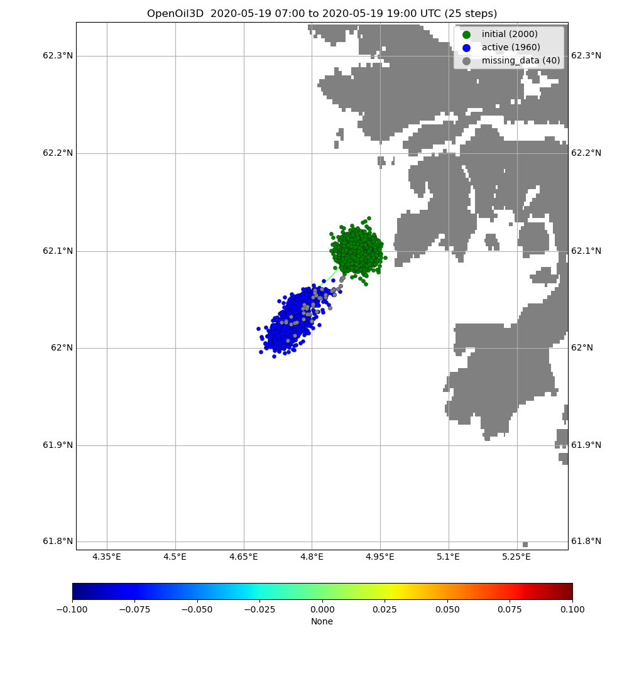
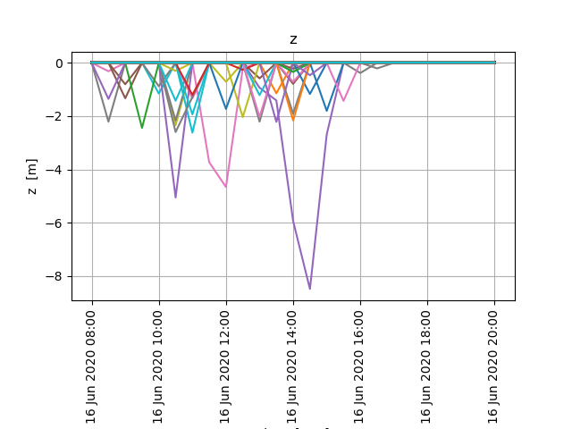
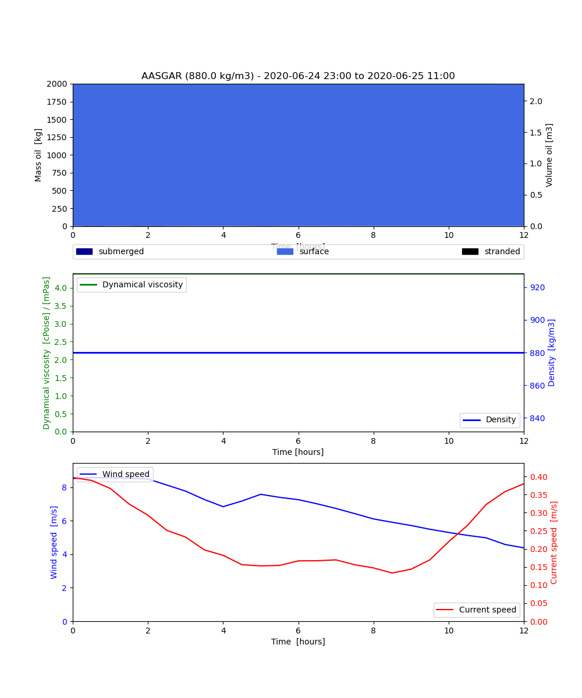

Note
Click here to download the full example code
Oil 3d (vertical mixing)¶
from datetime import timedelta
from opendrift.readers import reader_netCDF_CF_generic
from opendrift.models.openoil3D import OpenOil3D
o = OpenOil3D(loglevel=20) # Set loglevel to 0 for debug information
ncfile = 'oil3Dmixing.nc'
import_file = False # Set to True to import previous run
if import_file is True:
o.io_import_file(ncfile)
else:
reader_arome = reader_netCDF_CF_generic.Reader('https://thredds.met.no/thredds/dodsC/mepslatest/meps_lagged_6_h_latest_2_5km_latest.nc')
reader_norkyst = reader_netCDF_CF_generic.Reader('https://thredds.met.no/thredds/dodsC/sea/norkyst800m/1h/aggregate_be')
o.add_reader([reader_norkyst, reader_arome])
# Seed oil elements at defined position and time
o.seed_elements(lon=4.9, lat=62.1, z=0, radius=1000, number=2000,
time=reader_arome.start_time)
# Adjusting some configuration
o.set_config('processes:evaporation', False)
o.set_config('processes:turbulentmixing', True)
o.set_config('processes:dispersion', False)
#o.set_config('turbulentmixing:diffusivitymodel', 'windspeed_Sundby1983')
# Running model
o.run(end_time=reader_arome.start_time + timedelta(hours=12),
time_step=900, time_step_output=1800, outfile=ncfile)
Out:
18:33:27 INFO: OpenDriftSimulation initialised (version 1.2.2)
18:33:27 INFO: Opening dataset: https://thredds.met.no/thredds/dodsC/mepslatest/meps_lagged_6_h_latest_2_5km_latest.nc
18:33:27 INFO: Opening file with Dataset
18:33:28 INFO: Could not parse CF grid_mapping
18:33:30 INFO: Opening dataset: https://thredds.met.no/thredds/dodsC/sea/norkyst800m/1h/aggregate_be
18:33:30 INFO: Opening file with Dataset
18:33:38 INFO: Oil type not specified, using default: AASGAR
18:33:38 INFO: Config validation OK
18:33:38 INFO: Fallback values will be used for the following variables which have no readers:
18:33:38 INFO: sea_surface_wave_significant_height: 0.000000
18:33:38 INFO: sea_surface_wave_stokes_drift_x_velocity: 0.000000
18:33:38 INFO: sea_surface_wave_stokes_drift_y_velocity: 0.000000
18:33:38 INFO: sea_surface_wave_period_at_variance_spectral_density_maximum: 0.000000
18:33:38 INFO: sea_surface_wave_mean_period_from_variance_spectral_density_second_frequency_moment: 0.000000
18:33:38 INFO: sea_ice_area_fraction: 0.000000
18:33:38 INFO: sea_ice_x_velocity: 0.000000
18:33:38 INFO: sea_ice_y_velocity: 0.000000
18:33:38 INFO: Adding a dynamical landmask with max. priority based on assumed maximum speed of 1.3 m/s. Adding a customised landmask may be faster...
18:33:41 INFO: Using existing reader for land_binary_mask
18:33:41 INFO: All points are in ocean
18:33:41 INFO: Using default oil-water tension of 0.03Nm
18:33:41 INFO: 2020-06-10 16:00:00 - step 1 of 48 - 2000 active elements (0 deactivated)
18:33:44 INFO: 2020-06-10 16:15:00 - step 2 of 48 - 2000 active elements (0 deactivated)
18:33:46 INFO: Interpolating profiles in time
18:33:46 INFO: ========================
18:33:46 INFO: Exception:
18:33:46 INFO: All 14 particles (4.87-4.92E, 62.09-62.12N) are outside domain of https://thredds.met.no/thredds/dodsC/mepslatest/meps_lagged_6_h_latest_2_5km_latest.nc (-18.12-54.24E, 49.77-72.76N)
18:33:46 INFO: ========================
18:33:46 WARNING: Missing variables: ['x_sea_water_velocity', 'y_sea_water_velocity', 'sea_surface_wave_significant_height', 'x_wind', 'y_wind', 'land_binary_mask']
18:33:47 INFO: 2020-06-10 16:30:00 - step 3 of 48 - 1986 active elements (14 deactivated)
18:33:47 INFO: Interpolating profiles in time
18:33:47 INFO: ========================
18:33:47 INFO: Exception:
18:33:47 INFO: All 9 particles (4.86-4.93E, 62.08-62.11N) are outside domain of https://thredds.met.no/thredds/dodsC/mepslatest/meps_lagged_6_h_latest_2_5km_latest.nc (-18.12-54.24E, 49.77-72.76N)
18:33:47 INFO: ========================
18:33:47 WARNING: Missing variables: ['x_sea_water_velocity', 'y_sea_water_velocity', 'sea_surface_wave_significant_height', 'x_wind', 'y_wind', 'land_binary_mask']
18:33:47 INFO: 2020-06-10 16:45:00 - step 4 of 48 - 1977 active elements (23 deactivated)
18:33:47 INFO: Interpolating profiles in time
18:33:47 INFO: ========================
18:33:47 INFO: Exception:
18:33:47 INFO: All 18 particles (4.86-4.93E, 62.08-62.11N) are outside domain of https://thredds.met.no/thredds/dodsC/mepslatest/meps_lagged_6_h_latest_2_5km_latest.nc (-18.12-54.24E, 49.77-72.76N)
18:33:47 INFO: ========================
18:33:47 WARNING: Missing variables: ['x_sea_water_velocity', 'y_sea_water_velocity', 'sea_surface_wave_significant_height', 'x_wind', 'y_wind', 'land_binary_mask']
18:33:47 INFO: 2020-06-10 17:00:00 - step 5 of 48 - 1959 active elements (41 deactivated)
18:33:47 INFO: ========================
18:33:47 INFO: Exception:
18:33:47 INFO: All 26 particles (4.83-4.92E, 62.08-62.12N) are outside domain of https://thredds.met.no/thredds/dodsC/mepslatest/meps_lagged_6_h_latest_2_5km_latest.nc (-18.12-54.24E, 49.77-72.76N)
18:33:47 INFO: ========================
18:33:47 WARNING: Missing variables: ['x_sea_water_velocity', 'y_sea_water_velocity', 'sea_surface_wave_significant_height', 'x_wind', 'y_wind', 'land_binary_mask']
18:33:47 INFO: 2020-06-10 17:15:00 - step 6 of 48 - 1933 active elements (67 deactivated)
18:33:49 INFO: Interpolating profiles in time
18:33:49 INFO: ========================
18:33:49 INFO: Exception:
18:33:49 INFO: All 24 particles (4.84-4.90E, 62.08-62.11N) are outside domain of https://thredds.met.no/thredds/dodsC/mepslatest/meps_lagged_6_h_latest_2_5km_latest.nc (-18.12-54.24E, 49.77-72.76N)
18:33:49 INFO: ========================
18:33:49 WARNING: Missing variables: ['x_sea_water_velocity', 'y_sea_water_velocity', 'sea_surface_wave_significant_height', 'x_wind', 'y_wind', 'land_binary_mask']
18:33:49 INFO: 2020-06-10 17:30:00 - step 7 of 48 - 1909 active elements (91 deactivated)
18:33:49 INFO: Interpolating profiles in time
18:33:49 INFO: ========================
18:33:49 INFO: Exception:
18:33:49 INFO: All 22 particles (4.82-4.91E, 62.08-62.11N) are outside domain of https://thredds.met.no/thredds/dodsC/mepslatest/meps_lagged_6_h_latest_2_5km_latest.nc (-18.12-54.24E, 49.77-72.76N)
18:33:49 INFO: ========================
18:33:49 WARNING: Missing variables: ['x_sea_water_velocity', 'y_sea_water_velocity', 'sea_surface_wave_significant_height', 'x_wind', 'y_wind', 'land_binary_mask']
18:33:49 INFO: 2020-06-10 17:45:00 - step 8 of 48 - 1887 active elements (113 deactivated)
18:33:50 INFO: Interpolating profiles in time
18:33:50 INFO: ========================
18:33:50 INFO: Exception:
18:33:50 INFO: All 44 particles (4.83-4.91E, 62.08-62.11N) are outside domain of https://thredds.met.no/thredds/dodsC/mepslatest/meps_lagged_6_h_latest_2_5km_latest.nc (-18.12-54.24E, 49.77-72.76N)
18:33:50 INFO: ========================
18:33:50 WARNING: Missing variables: ['x_sea_water_velocity', 'y_sea_water_velocity', 'sea_surface_wave_significant_height', 'x_wind', 'y_wind', 'land_binary_mask']
18:33:50 INFO: 2020-06-10 18:00:00 - step 9 of 48 - 1843 active elements (157 deactivated)
18:33:50 INFO: ========================
18:33:50 INFO: Exception:
18:33:50 INFO: All 39 particles (4.83-4.92E, 62.07-62.11N) are outside domain of https://thredds.met.no/thredds/dodsC/mepslatest/meps_lagged_6_h_latest_2_5km_latest.nc (-18.12-54.24E, 49.77-72.76N)
18:33:50 INFO: ========================
18:33:50 WARNING: Missing variables: ['x_sea_water_velocity', 'y_sea_water_velocity', 'sea_surface_wave_significant_height', 'x_wind', 'y_wind', 'land_binary_mask']
18:33:50 INFO: 2020-06-10 18:15:00 - step 10 of 48 - 1804 active elements (196 deactivated)
18:33:54 INFO: Interpolating profiles in time
18:33:54 INFO: ========================
18:33:54 INFO: Exception:
18:33:54 INFO: All 35 particles (4.83-4.91E, 62.06-62.12N) are outside domain of https://thredds.met.no/thredds/dodsC/mepslatest/meps_lagged_6_h_latest_2_5km_latest.nc (-18.12-54.24E, 49.77-72.76N)
18:33:54 INFO: ========================
18:33:54 WARNING: Missing variables: ['x_sea_water_velocity', 'y_sea_water_velocity', 'sea_surface_wave_significant_height', 'x_wind', 'y_wind', 'land_binary_mask']
18:33:54 INFO: 2020-06-10 18:30:00 - step 11 of 48 - 1769 active elements (231 deactivated)
18:33:54 INFO: Interpolating profiles in time
18:33:54 INFO: ========================
18:33:54 INFO: Exception:
18:33:54 INFO: All 51 particles (4.80-4.88E, 62.06-62.10N) are outside domain of https://thredds.met.no/thredds/dodsC/mepslatest/meps_lagged_6_h_latest_2_5km_latest.nc (-18.12-54.24E, 49.77-72.76N)
18:33:54 INFO: ========================
18:33:54 WARNING: Missing variables: ['x_sea_water_velocity', 'y_sea_water_velocity', 'sea_surface_wave_significant_height', 'x_wind', 'y_wind', 'land_binary_mask']
18:33:54 INFO: 2020-06-10 18:45:00 - step 12 of 48 - 1718 active elements (282 deactivated)
18:33:54 INFO: Interpolating profiles in time
18:33:54 INFO: ========================
18:33:54 INFO: Exception:
18:33:54 INFO: All 46 particles (4.82-4.90E, 62.06-62.10N) are outside domain of https://thredds.met.no/thredds/dodsC/mepslatest/meps_lagged_6_h_latest_2_5km_latest.nc (-18.12-54.24E, 49.77-72.76N)
18:33:54 INFO: ========================
18:33:54 WARNING: Missing variables: ['x_sea_water_velocity', 'y_sea_water_velocity', 'sea_surface_wave_significant_height', 'x_wind', 'y_wind', 'land_binary_mask']
18:33:54 INFO: 2020-06-10 19:00:00 - step 13 of 48 - 1672 active elements (328 deactivated)
18:33:54 INFO: ========================
18:33:54 INFO: Exception:
18:33:54 INFO: All 46 particles (4.79-4.86E, 62.05-62.10N) are outside domain of https://thredds.met.no/thredds/dodsC/mepslatest/meps_lagged_6_h_latest_2_5km_latest.nc (-18.12-54.24E, 49.77-72.76N)
18:33:54 INFO: ========================
18:33:54 WARNING: Missing variables: ['x_sea_water_velocity', 'y_sea_water_velocity', 'sea_surface_wave_significant_height', 'x_wind', 'y_wind', 'land_binary_mask']
18:33:54 INFO: 2020-06-10 19:15:00 - step 14 of 48 - 1626 active elements (374 deactivated)
18:33:56 INFO: Interpolating profiles in time
18:33:57 INFO: ========================
18:33:57 INFO: Exception:
18:33:57 INFO: All 31 particles (4.81-4.85E, 62.05-62.09N) are outside domain of https://thredds.met.no/thredds/dodsC/mepslatest/meps_lagged_6_h_latest_2_5km_latest.nc (-18.12-54.24E, 49.77-72.76N)
18:33:57 INFO: ========================
18:33:57 WARNING: Missing variables: ['x_sea_water_velocity', 'y_sea_water_velocity', 'sea_surface_wave_significant_height', 'x_wind', 'y_wind', 'land_binary_mask']
18:33:57 INFO: 2020-06-10 19:30:00 - step 15 of 48 - 1595 active elements (405 deactivated)
18:33:57 INFO: Interpolating profiles in time
18:33:57 INFO: ========================
18:33:57 INFO: Exception:
18:33:57 INFO: All 47 particles (4.79-4.86E, 62.05-62.09N) are outside domain of https://thredds.met.no/thredds/dodsC/mepslatest/meps_lagged_6_h_latest_2_5km_latest.nc (-18.12-54.24E, 49.77-72.76N)
18:33:57 INFO: ========================
18:33:57 WARNING: Missing variables: ['x_sea_water_velocity', 'y_sea_water_velocity', 'sea_surface_wave_significant_height', 'x_wind', 'y_wind', 'land_binary_mask']
18:33:57 INFO: 2020-06-10 19:45:00 - step 16 of 48 - 1548 active elements (452 deactivated)
18:33:57 INFO: Interpolating profiles in time
18:33:57 INFO: ========================
18:33:57 INFO: Exception:
18:33:57 INFO: All 41 particles (4.80-4.86E, 62.05-62.09N) are outside domain of https://thredds.met.no/thredds/dodsC/mepslatest/meps_lagged_6_h_latest_2_5km_latest.nc (-18.12-54.24E, 49.77-72.76N)
18:33:57 INFO: ========================
18:33:57 WARNING: Missing variables: ['x_sea_water_velocity', 'y_sea_water_velocity', 'sea_surface_wave_significant_height', 'x_wind', 'y_wind', 'land_binary_mask']
18:33:57 INFO: 2020-06-10 20:00:00 - step 17 of 48 - 1507 active elements (493 deactivated)
18:33:57 INFO: ========================
18:33:57 INFO: Exception:
18:33:57 INFO: All 38 particles (4.78-4.85E, 62.04-62.09N) are outside domain of https://thredds.met.no/thredds/dodsC/mepslatest/meps_lagged_6_h_latest_2_5km_latest.nc (-18.12-54.24E, 49.77-72.76N)
18:33:57 INFO: ========================
18:33:57 WARNING: Missing variables: ['x_sea_water_velocity', 'y_sea_water_velocity', 'sea_surface_wave_significant_height', 'x_wind', 'y_wind', 'land_binary_mask']
18:33:57 INFO: 2020-06-10 20:15:00 - step 18 of 48 - 1469 active elements (531 deactivated)
18:33:59 INFO: Interpolating profiles in time
18:33:59 INFO: ========================
18:33:59 INFO: Exception:
18:33:59 INFO: All 36 particles (4.77-4.85E, 62.04-62.09N) are outside domain of https://thredds.met.no/thredds/dodsC/mepslatest/meps_lagged_6_h_latest_2_5km_latest.nc (-18.12-54.24E, 49.77-72.76N)
18:33:59 INFO: ========================
18:33:59 WARNING: Missing variables: ['x_sea_water_velocity', 'y_sea_water_velocity', 'sea_surface_wave_significant_height', 'x_wind', 'y_wind', 'land_binary_mask']
18:33:59 INFO: 2020-06-10 20:30:00 - step 19 of 48 - 1433 active elements (567 deactivated)
18:33:59 INFO: Interpolating profiles in time
18:33:59 INFO: ========================
18:33:59 INFO: Exception:
18:33:59 INFO: All 38 particles (4.75-4.86E, 62.04-62.08N) are outside domain of https://thredds.met.no/thredds/dodsC/mepslatest/meps_lagged_6_h_latest_2_5km_latest.nc (-18.12-54.24E, 49.77-72.76N)
18:33:59 INFO: ========================
18:33:59 WARNING: Missing variables: ['x_sea_water_velocity', 'y_sea_water_velocity', 'sea_surface_wave_significant_height', 'x_wind', 'y_wind', 'land_binary_mask']
18:33:59 INFO: 2020-06-10 20:45:00 - step 20 of 48 - 1395 active elements (605 deactivated)
18:33:59 INFO: Interpolating profiles in time
18:33:59 INFO: ========================
18:33:59 INFO: Exception:
18:33:59 INFO: All 28 particles (4.75-4.86E, 62.02-62.07N) are outside domain of https://thredds.met.no/thredds/dodsC/mepslatest/meps_lagged_6_h_latest_2_5km_latest.nc (-18.12-54.24E, 49.77-72.76N)
18:33:59 INFO: ========================
18:33:59 WARNING: Missing variables: ['x_sea_water_velocity', 'y_sea_water_velocity', 'sea_surface_wave_significant_height', 'x_wind', 'y_wind', 'land_binary_mask']
18:34:00 INFO: 2020-06-10 21:00:00 - step 21 of 48 - 1367 active elements (633 deactivated)
18:34:00 INFO: ========================
18:34:00 INFO: Exception:
18:34:00 INFO: All 24 particles (4.75-4.82E, 62.03-62.06N) are outside domain of https://thredds.met.no/thredds/dodsC/mepslatest/meps_lagged_6_h_latest_2_5km_latest.nc (-18.12-54.24E, 49.77-72.76N)
18:34:00 INFO: ========================
18:34:00 WARNING: Missing variables: ['x_sea_water_velocity', 'y_sea_water_velocity', 'sea_surface_wave_significant_height', 'x_wind', 'y_wind', 'land_binary_mask']
18:34:00 INFO: 2020-06-10 21:15:00 - step 22 of 48 - 1343 active elements (657 deactivated)
18:34:02 INFO: Interpolating profiles in time
18:34:02 INFO: ========================
18:34:02 INFO: Exception:
18:34:02 INFO: All 17 particles (4.75-4.81E, 62.02-62.05N) are outside domain of https://thredds.met.no/thredds/dodsC/mepslatest/meps_lagged_6_h_latest_2_5km_latest.nc (-18.12-54.24E, 49.77-72.76N)
18:34:02 INFO: ========================
18:34:02 WARNING: Missing variables: ['x_sea_water_velocity', 'y_sea_water_velocity', 'sea_surface_wave_significant_height', 'x_wind', 'y_wind', 'land_binary_mask']
18:34:02 INFO: 2020-06-10 21:30:00 - step 23 of 48 - 1326 active elements (674 deactivated)
18:34:02 INFO: Interpolating profiles in time
18:34:02 INFO: ========================
18:34:02 INFO: Exception:
18:34:02 INFO: All 30 particles (4.74-4.80E, 62.01-62.06N) are outside domain of https://thredds.met.no/thredds/dodsC/mepslatest/meps_lagged_6_h_latest_2_5km_latest.nc (-18.12-54.24E, 49.77-72.76N)
18:34:02 INFO: ========================
18:34:02 WARNING: Missing variables: ['x_sea_water_velocity', 'y_sea_water_velocity', 'sea_surface_wave_significant_height', 'x_wind', 'y_wind', 'land_binary_mask']
18:34:03 INFO: 2020-06-10 21:45:00 - step 24 of 48 - 1296 active elements (704 deactivated)
18:34:03 INFO: Interpolating profiles in time
18:34:03 INFO: ========================
18:34:03 INFO: Exception:
18:34:03 INFO: All 16 particles (4.73-4.78E, 62.02-62.05N) are outside domain of https://thredds.met.no/thredds/dodsC/mepslatest/meps_lagged_6_h_latest_2_5km_latest.nc (-18.12-54.24E, 49.77-72.76N)
18:34:03 INFO: ========================
18:34:03 WARNING: Missing variables: ['x_sea_water_velocity', 'y_sea_water_velocity', 'sea_surface_wave_significant_height', 'x_wind', 'y_wind', 'land_binary_mask']
18:34:03 INFO: 2020-06-10 22:00:00 - step 25 of 48 - 1280 active elements (720 deactivated)
18:34:03 INFO: ========================
18:34:03 INFO: Exception:
18:34:03 INFO: All 14 particles (4.71-4.80E, 62.01-62.04N) are outside domain of https://thredds.met.no/thredds/dodsC/mepslatest/meps_lagged_6_h_latest_2_5km_latest.nc (-18.12-54.24E, 49.77-72.76N)
18:34:03 INFO: ========================
18:34:03 WARNING: Missing variables: ['x_sea_water_velocity', 'y_sea_water_velocity', 'sea_surface_wave_significant_height', 'x_wind', 'y_wind', 'land_binary_mask']
18:34:03 INFO: 2020-06-10 22:15:00 - step 26 of 48 - 1266 active elements (734 deactivated)
18:34:05 INFO: Interpolating profiles in time
18:34:05 INFO: ========================
18:34:05 INFO: Exception:
18:34:05 INFO: All 14 particles (4.72-4.78E, 62.02-62.05N) are outside domain of https://thredds.met.no/thredds/dodsC/mepslatest/meps_lagged_6_h_latest_2_5km_latest.nc (-18.12-54.24E, 49.77-72.76N)
18:34:05 INFO: ========================
18:34:05 WARNING: Missing variables: ['x_sea_water_velocity', 'y_sea_water_velocity', 'sea_surface_wave_significant_height', 'x_wind', 'y_wind', 'land_binary_mask']
18:34:05 INFO: 2020-06-10 22:30:00 - step 27 of 48 - 1252 active elements (748 deactivated)
18:34:05 INFO: Interpolating profiles in time
18:34:05 INFO: ========================
18:34:05 INFO: Exception:
18:34:05 INFO: All 7 particles (4.72-4.75E, 62.02-62.04N) are outside domain of https://thredds.met.no/thredds/dodsC/mepslatest/meps_lagged_6_h_latest_2_5km_latest.nc (-18.12-54.24E, 49.77-72.76N)
18:34:05 INFO: ========================
18:34:05 WARNING: Missing variables: ['x_sea_water_velocity', 'y_sea_water_velocity', 'sea_surface_wave_significant_height', 'x_wind', 'y_wind', 'land_binary_mask']
18:34:05 INFO: 2020-06-10 22:45:00 - step 28 of 48 - 1245 active elements (755 deactivated)
18:34:05 INFO: Interpolating profiles in time
18:34:05 INFO: ========================
18:34:05 INFO: Exception:
18:34:05 INFO: All 5 particles (4.71-4.73E, 62.00-62.04N) are outside domain of https://thredds.met.no/thredds/dodsC/mepslatest/meps_lagged_6_h_latest_2_5km_latest.nc (-18.12-54.24E, 49.77-72.76N)
18:34:05 INFO: ========================
18:34:05 WARNING: Missing variables: ['x_sea_water_velocity', 'y_sea_water_velocity', 'sea_surface_wave_significant_height', 'x_wind', 'y_wind', 'land_binary_mask']
18:34:05 INFO: 2020-06-10 23:00:00 - step 29 of 48 - 1240 active elements (760 deactivated)
18:34:05 INFO: 2020-06-10 23:15:00 - step 30 of 48 - 1240 active elements (760 deactivated)
18:34:07 INFO: Interpolating profiles in time
18:34:08 INFO: 2020-06-10 23:30:00 - step 31 of 48 - 1240 active elements (760 deactivated)
18:34:08 INFO: Interpolating profiles in time
18:34:08 INFO: 2020-06-10 23:45:00 - step 32 of 48 - 1240 active elements (760 deactivated)
18:34:08 INFO: Interpolating profiles in time
18:34:08 INFO: 2020-06-11 00:00:00 - step 33 of 48 - 1240 active elements (760 deactivated)
18:34:08 INFO: 2020-06-11 00:15:00 - step 34 of 48 - 1240 active elements (760 deactivated)
18:34:09 INFO: Interpolating profiles in time
18:34:10 INFO: 2020-06-11 00:30:00 - step 35 of 48 - 1240 active elements (760 deactivated)
18:34:10 INFO: Interpolating profiles in time
18:34:10 INFO: 2020-06-11 00:45:00 - step 36 of 48 - 1240 active elements (760 deactivated)
18:34:10 INFO: Interpolating profiles in time
18:34:10 INFO: 2020-06-11 01:00:00 - step 37 of 48 - 1240 active elements (760 deactivated)
18:34:10 INFO: 2020-06-11 01:15:00 - step 38 of 48 - 1240 active elements (760 deactivated)
18:34:13 INFO: Interpolating profiles in time
18:34:13 INFO: 2020-06-11 01:30:00 - step 39 of 48 - 1240 active elements (760 deactivated)
18:34:13 INFO: Interpolating profiles in time
18:34:13 INFO: 2020-06-11 01:45:00 - step 40 of 48 - 1240 active elements (760 deactivated)
18:34:13 INFO: Interpolating profiles in time
18:34:13 INFO: 2020-06-11 02:00:00 - step 41 of 48 - 1240 active elements (760 deactivated)
18:34:13 INFO: 2020-06-11 02:15:00 - step 42 of 48 - 1240 active elements (760 deactivated)
18:34:15 INFO: Interpolating profiles in time
18:34:16 INFO: 2020-06-11 02:30:00 - step 43 of 48 - 1240 active elements (760 deactivated)
18:34:16 INFO: Interpolating profiles in time
18:34:16 INFO: 2020-06-11 02:45:00 - step 44 of 48 - 1240 active elements (760 deactivated)
18:34:16 INFO: Interpolating profiles in time
18:34:16 INFO: 2020-06-11 03:00:00 - step 45 of 48 - 1240 active elements (760 deactivated)
18:34:16 INFO: 2020-06-11 03:15:00 - step 46 of 48 - 1240 active elements (760 deactivated)
18:34:18 INFO: Interpolating profiles in time
18:34:18 INFO: 2020-06-11 03:30:00 - step 47 of 48 - 1240 active elements (760 deactivated)
18:34:18 INFO: Interpolating profiles in time
18:34:18 INFO: 2020-06-11 03:45:00 - step 48 of 48 - 1240 active elements (760 deactivated)
18:34:18 INFO: Interpolating profiles in time
18:34:18 INFO: Wrote 25 steps to file oil3Dmixing.nc
Print and plot results
print(o)
o.plot(linecolor='z', fast=True)
o.plot_property('z')
o.plot_oil_budget()
o.animation(fast=True)
- 
- 
- 
Out:
===========================
--------------------
Reader performance:
--------------------
https://thredds.met.no/thredds/dodsC/sea/norkyst800m/1h/aggregate_be
0:00:32.4 total
0:00:00.0 preparing
0:00:31.4 reading
0:00:00.8 interpolation
0:00:00.0 interpolation_time
0:00:00.0 masking
--------------------
https://thredds.met.no/thredds/dodsC/mepslatest/meps_lagged_6_h_latest_2_5km_latest.nc
0 total
0 preparing
--------------------
global_landmask
0:00:00.0 total
0:00:00.0 preparing
0:00:00.0 reading
0:00:00.0 interpolation_time
0:00:00.0 masking
--------------------
Performance:
51.2 total time
10.7 configuration
2.8 preparing main loop
2.6 making dynamical landmask
0.0 moving elements to ocean
32.8 readers
0.0 global_landmask
0.1 postprocessing
37.1 main loop
32.4 https://thredds.met.no/thredds/dodsC/sea/norkyst800m/1h/aggregate_be
3.9 updating elements
0.0 oil weathering
3.4 vertical mixing
0.0 https://thredds.met.no/thredds/dodsC/mepslatest/meps_lagged_6_h_latest_2_5km_latest.nc
0.5 cleaning up
--------------------
===========================
Model: OpenOil3D (OpenDrift version 1.2.2)
1240 active Oil3D particles (760 deactivated, 0 scheduled)
Projection: +proj=stere +ellps=WGS84 +lat_0=90.0 +lat_ts=60.0 +x_0=3192800 +y_0=1784000 +lon_0=70
-------------------
Environment variables:
-----
ocean_vertical_diffusivity
sea_floor_depth_below_sea_level
sea_water_salinity
sea_water_temperature
upward_sea_water_velocity
x_sea_water_velocity
y_sea_water_velocity
1) https://thredds.met.no/thredds/dodsC/sea/norkyst800m/1h/aggregate_be
-----
x_wind
y_wind
1) https://thredds.met.no/thredds/dodsC/sea/norkyst800m/1h/aggregate_be
2) https://thredds.met.no/thredds/dodsC/mepslatest/meps_lagged_6_h_latest_2_5km_latest.nc
-----
land_binary_mask
1) global_landmask
-----
Readers not added for the following variables:
sea_ice_area_fraction
sea_ice_x_velocity
sea_ice_y_velocity
sea_surface_wave_mean_period_from_variance_spectral_density_second_frequency_moment
sea_surface_wave_period_at_variance_spectral_density_maximum
sea_surface_wave_significant_height
sea_surface_wave_stokes_drift_x_velocity
sea_surface_wave_stokes_drift_y_velocity
Time:
Start: 2020-06-10 16:00:00
Present: 2020-06-11 04:00:00
Calculation steps: 48 * 0:15:00 - total time: 12:00:00
Output steps: 25 * 0:30:00
-------------------
"Missing variables: ['x_sea_water_velocity', 'y_sea_water_velocity', 'sea_surface_wave_significant_height', 'x_wind', 'y_wind', 'land_binary_mask']", "Missing variables: ['x_sea_water_velocity', 'y_sea_water_velocity', 'sea_surface_wave_significant_height', 'x_wind', 'y_wind', 'land_binary_mask']", "Missing variables: ['x_sea_water_velocity', 'y_sea_water_velocity', 'sea_surface_wave_significant_height', 'x_wind', 'y_wind', 'land_binary_mask']", "Missing variables: ['x_sea_water_velocity', 'y_sea_water_velocity', 'sea_surface_wave_significant_height', 'x_wind', 'y_wind', 'land_binary_mask']", "Missing variables: ['x_sea_water_velocity', 'y_sea_water_velocity', 'sea_surface_wave_significant_height', 'x_wind', 'y_wind', 'land_binary_mask']", "Missing variables: ['x_sea_water_velocity', 'y_sea_water_velocity', 'sea_surface_wave_significant_height', 'x_wind', 'y_wind', 'land_binary_mask']", "Missing variables: ['x_sea_water_velocity', 'y_sea_water_velocity', 'sea_surface_wave_significant_height', 'x_wind', 'y_wind', 'land_binary_mask']", "Missing variables: ['x_sea_water_velocity', 'y_sea_water_velocity', 'sea_surface_wave_significant_height', 'x_wind', 'y_wind', 'land_binary_mask']", "Missing variables: ['x_sea_water_velocity', 'y_sea_water_velocity', 'sea_surface_wave_significant_height', 'x_wind', 'y_wind', 'land_binary_mask']", "Missing variables: ['x_sea_water_velocity', 'y_sea_water_velocity', 'sea_surface_wave_significant_height', 'x_wind', 'y_wind', 'land_binary_mask']", "Missing variables: ['x_sea_water_velocity', 'y_sea_water_velocity', 'sea_surface_wave_significant_height', 'x_wind', 'y_wind', 'land_binary_mask']", "Missing variables: ['x_sea_water_velocity', 'y_sea_water_velocity', 'sea_surface_wave_significant_height', 'x_wind', 'y_wind', 'land_binary_mask']", "Missing variables: ['x_sea_water_velocity', 'y_sea_water_velocity', 'sea_surface_wave_significant_height', 'x_wind', 'y_wind', 'land_binary_mask']", "Missing variables: ['x_sea_water_velocity', 'y_sea_water_velocity', 'sea_surface_wave_significant_height', 'x_wind', 'y_wind', 'land_binary_mask']", "Missing variables: ['x_sea_water_velocity', 'y_sea_water_velocity', 'sea_surface_wave_significant_height', 'x_wind', 'y_wind', 'land_binary_mask']", "Missing variables: ['x_sea_water_velocity', 'y_sea_water_velocity', 'sea_surface_wave_significant_height', 'x_wind', 'y_wind', 'land_binary_mask']", "Missing variables: ['x_sea_water_velocity', 'y_sea_water_velocity', 'sea_surface_wave_significant_height', 'x_wind', 'y_wind', 'land_binary_mask']", "Missing variables: ['x_sea_water_velocity', 'y_sea_water_velocity', 'sea_surface_wave_significant_height', 'x_wind', 'y_wind', 'land_binary_mask']", "Missing variables: ['x_sea_water_velocity', 'y_sea_water_velocity', 'sea_surface_wave_significant_height', 'x_wind', 'y_wind', 'land_binary_mask']", "Missing variables: ['x_sea_water_velocity', 'y_sea_water_velocity', 'sea_surface_wave_significant_height', 'x_wind', 'y_wind', 'land_binary_mask']", "Missing variables: ['x_sea_water_velocity', 'y_sea_water_velocity', 'sea_surface_wave_significant_height', 'x_wind', 'y_wind', 'land_binary_mask']", "Missing variables: ['x_sea_water_velocity', 'y_sea_water_velocity', 'sea_surface_wave_significant_height', 'x_wind', 'y_wind', 'land_binary_mask']", "Missing variables: ['x_sea_water_velocity', 'y_sea_water_velocity', 'sea_surface_wave_significant_height', 'x_wind', 'y_wind', 'land_binary_mask']", "Missing variables: ['x_sea_water_velocity', 'y_sea_water_velocity', 'sea_surface_wave_significant_height', 'x_wind', 'y_wind', 'land_binary_mask']", "Missing variables: ['x_sea_water_velocity', 'y_sea_water_velocity', 'sea_surface_wave_significant_height', 'x_wind', 'y_wind', 'land_binary_mask']", "Missing variables: ['x_sea_water_velocity', 'y_sea_water_velocity', 'sea_surface_wave_significant_height', 'x_wind', 'y_wind', 'land_binary_mask']", "Missing variables: ['x_sea_water_velocity', 'y_sea_water_velocity', 'sea_surface_wave_significant_height', 'x_wind', 'y_wind', 'land_binary_mask']"
===========================
18:34:19 WARNING: plotting fast. this will make your plots less accurate.
/opt/conda/envs/opendrift/lib/python3.8/site-packages/numpy/ma/core.py:1026: RuntimeWarning: overflow encountered in multiply
result = self.f(da, db, *args, **kwargs)
18:34:35 WARNING: plotting fast. this will make your plots less accurate.
18:34:37 INFO: Saving animation to /root/project/docs/source/gallery/animations/example_oil3d_verticalmixing_0.gif...
18:34:37 INFO: Making animated gif...

Total running time of the script: ( 1 minutes 26.666 seconds)